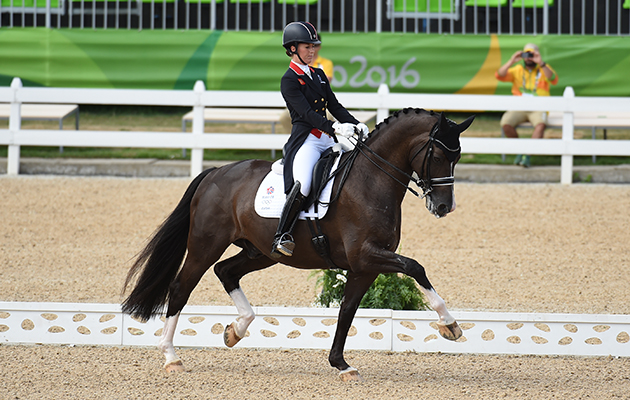

Is the horseback riding a sport?
If you have been an equestrian for any length of time, you know the strength, determination, and mental focus that horseback riding requires. Amongst equestrians, there is no question that this discipline is a sport of its own. To the rest of the mainstream sporting industries, though, this question is still out for debate. Still in doubt with this question? Come to visit us and we will show you all the truth!
"You know you're in too deep when you get legitimately scared of plastic bags, banners, birds, people with umbrellas and everything that makes noise, moving too fast or both together."
How To Book A Training
-
Pre-register
Choose the day, time, type of trainig and book here.
-
Arrival and check-in
Come to the stable, choose your horse, meet your coach.
-
Get ready
We will give you a helmet, a body protector (for kids) and will have a talk about safety and riding basics.
-
Take a ride
Learn something new, feel what it's like to be a rider and just enjoy new experience.
-
Say "Goodbye" to your new friends
Share your experience on social media, tag us and come to visit us again as soon as you can :)
Price List
| Type of Training | Private Lesson (40-60 min) | Group Lesson (60-120 min) | Private Month (10 lessons) | Group Month (10 lessons) |
|---|---|---|---|---|
| Kids (6-11 y.o.) | $60 | $50 | $500 | $400 |
| Teens (12-23 y.o.) | $80 | $70 | $700 | $500 |
| Adults (24+ y.o.) | $70 | $60 | $600 | $450 |

Want to book a ride?
About Us
We were founded in 2014 by a family of Stok. Mary, Victor and their daughter Sandra are simple people who just love animals. They have 2 cats, 2 dogs, 2 fish and 2 frogs waiting for them at home everyday and 6 horses at stable. Their career as a proffesional equestrias started in 2010 when the whole family had their first competitions. The most ridiculously, is that they competed against each other and won all the prizes. After many competitions they bought 3 horses in 2012 and continued training and learning more and more. In 2014 they build their own stable for 24 horses with outdoor and indoor arena and other facilities for trainers, horses and visitors. So now in Stok Equestrian Club we have
- 21 horses;
- 3 ponies;
- 10 trainers;
- 40 club members (including all coaches);
- a lot of regular customers.
Come to visit us and we will tell you more intresting stories about us, our horses, our club!
Horseback Riding Disciplines
Do you want to know more about our activities? Follow the updates and never miss the competitions and seminars from our professionals.
Dressage
Dressage is an Olympic Sport governed by the FEI (International Federation for Equestrian Sports). In dressage, a horse and rider are judged based on the form, obedience, suppleness, and balance of the horse as well as how well the pair executes the movements in the program. There are progressive difficulty levels in dressage ranging from programs that include just walk, trot and stops, to Grand Prix level where complex movements such as piaffes and pirouettes are incorporated. Each sequence of movements is graded by a panel of judges (or just one for lower-level competitions).

Show Jumping
Also, an Olympic Sport governed by FEI, show jumping is when a horse and rider jump fences made up of lightweight rails in an arena. The difficulty rises with the increasing height of the obstacles, but also with the complexity of the layout of the obstacle course as well as the width, shape and make of the obstacles themselves. Abrupt turns, for instance, demand great flexibility and obedience of the horse and brightly colored or oddly shaped obstacles can be potentially intimidating to the horse. Riders get penalty points for any rails that are knocked down during the round, any refusals (where the horse stops before an obstacle) and for exceeding the optimum time. Show jumping is run both as individual and team events at an international level.

Cross Country
This is a very physically demanding discipline for both horse and rider and is performed in a gallop. Cross country involves an up to 4 miles long course in varied terrain with fixed fences as well as natural obstacles like sandbanks, ponds, and deep ditches. Penalties are given for refusals and when a rider exceeds the optimal time for the course. This is also one of the most accident-prone equestrian sports due to the fixed nature of the fences, which sometimes cause horses to stumble and riders to fall off at high speeds.